-
Personal Website
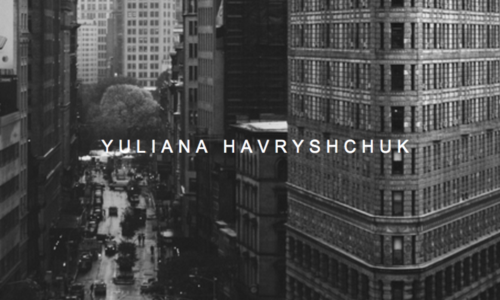
Personal Website
I thought it would be useful and fun to create an online portfolio for myself. It was an easy way to gain experience working with HTML CSS and JavaScript. It's clearly still a work in progress, but I'm learning a lot of cool new tricks every day that I work on it!
-
Minesweeper
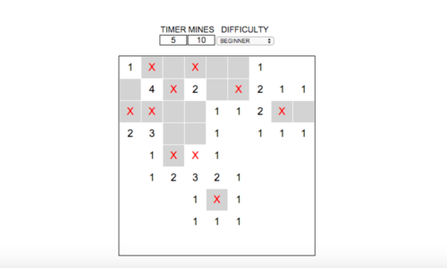
Online Minesweeper
Made with HTML, CSS and Javascript. The difficulty is customizable. A timer begins as soon as the player selects the first tile.
Play it here. -
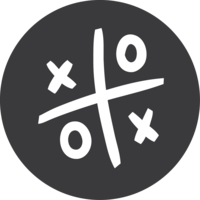Tic Tac Toe
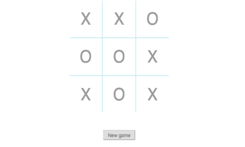
-
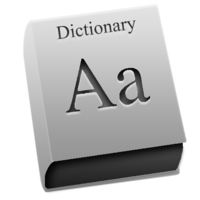Vocabulary Game
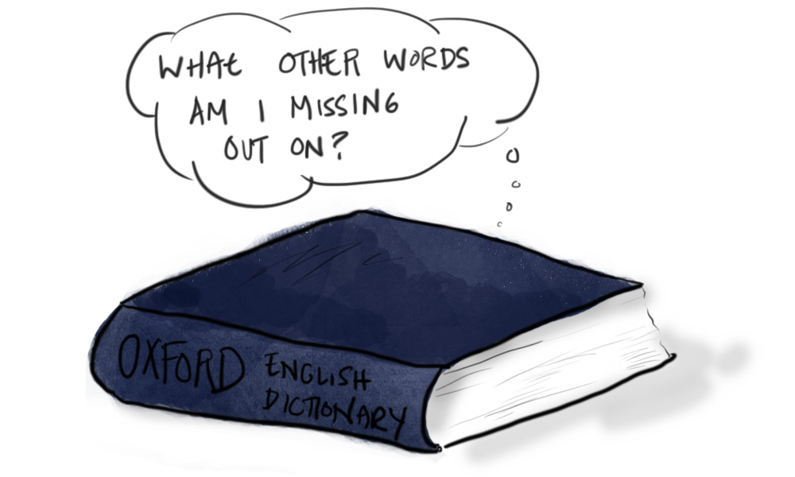
Vocabulary Game (Python)
Made with Python. Gets a random word and 5 definitions from www.randomlists.com. The player then has to choose the correct definition for the word. This was a good way to brush up on my Python skills and introduce myself to web-scraping.
See the code on Github -
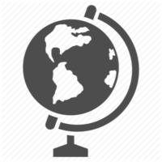Country Capital Game
Country Capital Game (Python)
Made with Python. The player then has to choose the correct capital for a given country. A hint (the first letter) can be requested. Also used to practice coding in Python and web-scraping.
See the code on Github. -
Adventure Game
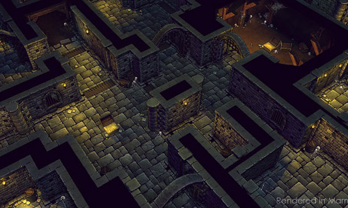
Adventure Game (C)
Made in C. The player controls their character through the command line, The goal is to get the sword and beat the monster, effectively saving the princess.
See the code on Github. -
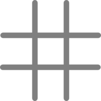Tic Tac Toe
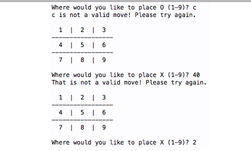
Tic Tac Toe (Python)
Made with Python. This was the first mini-project I did after deciding to pursue computer science. It was a lot of fun and I became addicted :). It is for one player, playable form the command line.
See the code on Github. -
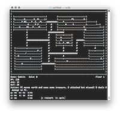Chamber Crawler 3000
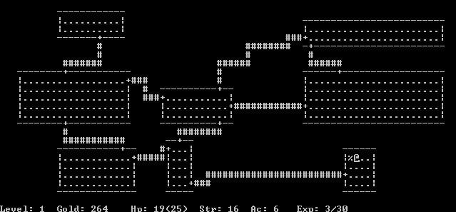
Chamber Crawler 3000 (C++)
Made with C++. Designed and implemented a text based game as a console application. Players choose a character race, (wizard, knight, samurai - each with different abilities), and play through 5 levels of battling enemies, and using gold and potion object in order to reach the last staircase.